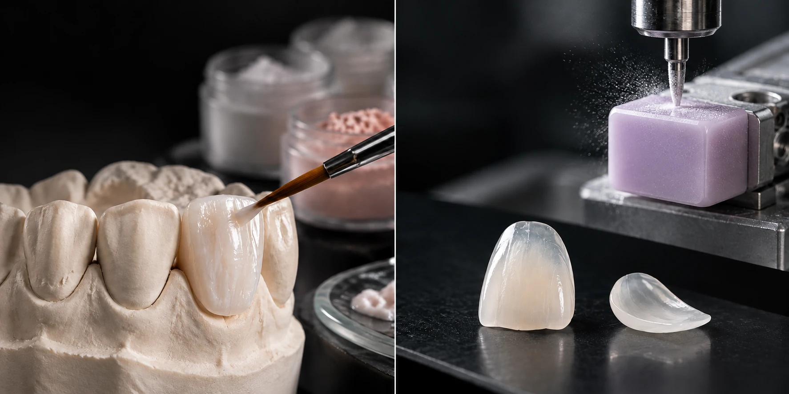

CASE 01LAMINATE · 4 UNITS
01 / DIRECTOR
어디까지 다듬을지보다
어디까지 남길지를 먼저 봅니다.
치아의 상태와 배열, 기존 수복물과 잇몸 상태를 확인하고 필요한 치료 범위를 먼저 판단합니다.
삭제량은 모든 치아에서 같지 않습니다. 가능한 범위 안에서 자연치를 최대한 보존하는 방향으로 계획합니다.
MAGNIFICATION확대 시야
PREPARATION삭제 범위
MARGIN경계 확인
OCCLUSION교합
02 / MATERIAL
치아에 맞춰
세라믹도 다르게 선택합니다.
모든 치아에 같은 재료와 같은 투명도를 적용하지 않습니다. 남아 있는 치아의 색, 필요한 두께, 표현해야 할 투명도와 형태에 따라 적합한 세라믹과 제작 방식을 선택합니다.

FELDSPATHIC PORCELAIN
세라믹 파우더를 한 층씩 정교하게 축성하여 자연치와 유사한 투명도와 미세한 색감을 표현하는 고심미 재료입니다.
LITHIUM DISILICATE
리튬 디실리케이트 블록을 정밀하게 가공하여 자연스러운 심미성과 높은 강도를 동시에 갖춘 재료입니다.
03 / CERAMIST
색을 고르는 것이 아니라
치아의 빛을 만듭니다.
자연치는 한 가지 흰색으로 이루어져 있지 않습니다. 명도와 투명도, 색의 깊이, 표면 질감과 형태를 함께 보고 주변 치아와 자연스럽게 이어지도록 제작합니다.
필요한 경우 실제 치아를 직접 확인하고 원장과 색과 형태를 조율해 제작에 반영합니다.
04 / CARE
붙이는 순간이
치료의 끝은 아닙니다.
치료 전에는 잇몸과 구강 상태를 확인하고, 치료 후에는 라미네이트와 주변 치아가 건강하게 유지될 수 있도록 필요한 관리 방법을 안내합니다.
BEFORE CARE
TREATMENT
AFTER CARE
PROCESS
좋은 결과는
과정에서도 차이가 납니다.
4 STEPS
01
DIAGNOSIS
치아와 잇몸 상태를 확인하고 치료 범위를 정합니다.
02
SCAN & DESIGN
현재 형태와 교합을 기록하고 필요한 경우 최종 형태를 계획합니다.
03
SHADE & FABRICATION
실제 치아의 색과 형태를 확인해 선택한 세라믹으로 제작합니다.
04
DELIVERY
형태와 색, 교합을 확인한 뒤 최종 부착합니다.
REMAKE LAMINATE
다시 하는 라미네이트는
처음보다 더 많은 것을 봐야 합니다.
기존 보철물을 제거한 뒤에는 처음 치료할 때와 다른 조건에서 다시 시작하게 됩니다.
01
남아 있는 자연치
기존 라미네이트를 제거한 뒤 자연치가 얼마나 남아 있는지 확인합니다.
02
기존 삭제량
이전 치료에서 어느 정도 삭제되었는지, 추가로 다듬을 수 있는 범위를 확인합니다.
03
잇몸과 마진
기존 보철의 경계와 잇몸 상태, 주변 조직의 상태를 함께 봅니다.
04
기존 보철의 문제
색, 형태, 비율, 두께와 주변 치아와의 조화 중 무엇이 아쉬웠는지 확인합니다.
05
바탕 치아의 색
기존 보철물을 제거한 뒤 드러난 치아 색이 새 라미네이트의 색과 투명도에 어떤 영향을 줄지 판단합니다.
06
교합
새 보철물에 반복적으로 힘이 집중되지 않는지 교합 상태도 함께 확인합니다.
CLINICAL ARCHIVE
말보다 확실한 건,
결과입니다.
CASE 02LAMINATE
CASE 03LAMINATE
※ 실제 치료 사례이며 동의를 받아 게재했습니다. 치료 결과는 개인에 따라 다를 수 있고, 시린 증상·잇몸 염증 등의 부작용이 생길 수 있습니다.
FAQ
라미네이트에 대해
자주 묻는 질문.
라미네이트는 얼마나 삭제하나요?＋
치아 상태와 원하는 변화의 정도에 따라 다릅니다. 법랑질 범위 안에서 0.3~0.7mm 정도를 다듬는 경우가 많고, 형태와 색의 변화가 작다면 삭제를 거의 하지 않는 방법도 함께 검토합니다. 정확한 범위는 진단과 모형 확인 후 말씀드립니다.
모든 경우에 적은 삭제로 치료할 수 있나요?＋
아닙니다. 치아가 앞으로 나와 있거나 색이 많이 어두운 경우, 기존 보철물이 있는 경우에는 추가 삭제가 필요할 수 있습니다. 적은 삭제가 어려운 경우에는 그 이유와 대안을 함께 설명드립니다.
기존 라미네이트도 다시 치료할 수 있나요?＋
가능합니다. 다만 기존 보철을 제거한 뒤 남아 있는 치아의 양과 잇몸 상태를 먼저 확인해야 하며, 경우에 따라 크라운 등 다른 방법이 더 적합할 수 있습니다.
세라믹 종류와 색, 형태는 어떻게 결정하나요?＋
치아의 두께, 바탕색, 교합을 보고 재료를 고르고, 기공사가 직접 치아 색을 확인해 명도와 투명도를 맞춥니다. 최종 부착 전 시적 단계에서 색과 형태를 함께 확인합니다.
라미네이트 치료 후에는 어떻게 관리해야 하나요?＋
앞니로 딱딱한 음식을 끊어 먹는 습관이나 이갈이는 파절의 원인이 될 수 있습니다. 필요한 경우 보호장치를 권해드리며, 6개월마다 정기 검진으로 경계부와 잇몸 상태를 확인합니다.